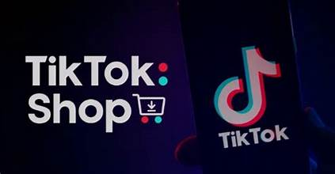

Cara Menggunakan Tiktok untuk Bisnis : Panduan Lengkap untuk Pemula
TikTok telah berkembang pesat menjadi salah satu platform media sosial paling populer, terutama di kalangan generasi muda. Bagi banyak bisnis, TikTok kini menjadi alat pemasaran yang kuat untuk menjangkau audiens yang lebih luas. Namun, tidak semua pemilik bisnis tahu bagaimana memanfaatkan platform ini dengan optimal. Dalam artikel ini, kita akan membahas cara menggunakan TikTok untuk bisnis agar dapat meningkatkan branding, penjualan, dan keterlibatan audiens.
Membuat Akun Bisnis di TikTok
Langkah pertama adalah membuat akun bisnis di TikTok. Akun bisnis memiliki fitur tambahan yang tidak tersedia di akun pribadi, seperti akses ke statistik, iklan, dan alat analitik. Berikut cara mengubah akun menjadi akun bisnis:
- Buka aplikasi TikTok dan masuk ke akun Anda.
- Pergi ke pengaturan akun.
- Pilih opsi "Beralih ke Akun Bisnis".
- Ikuti petunjuk yang diberikan, dan tentukan kategori bisnis yang sesuai dengan produk atau layanan Anda.
Memahami Audiens TikTok
Sebelum mulai membuat konten, penting untuk memahami siapa audiens utama Anda di TikTok. Sebagian besar pengguna TikTok adalah generasi muda (Gen Z dan milenial). Mereka menyukai konten yang menghibur, autentik, dan interaktif. Pastikan Anda mengetahui demografi pengguna yang ingin Anda targetkan serta jenis konten yang mereka sukai.
Cara terbaik untuk memahami audiens adalah dengan mengamati tren yang sedang populer di TikTok dan melihat bagaimana kompetitor atau bisnis lain dalam industri Anda berinteraksi dengan audiens mereka.
Menciptakan Konten yang Menarik
TikTok adalah platform yang sangat visual, jadi konten Anda harus menarik perhatian sejak detik pertama. Berikut beberapa tips untuk menciptakan konten yang menarik di TikTok:
- Buat Video Pendek dan Menghibur: Durasi ideal video TikTok adalah 15-60 detik. Pastikan pesan Anda disampaikan dengan cepat dan jelas.
- Ikuti Tren: TikTok dikenal dengan tren viralnya, mulai dari tantangan, filter, hingga lagu-lagu yang sedang populer. Mengikuti tren dapat membantu video Anda lebih mudah ditemukan oleh audiens.
- Gunakan Hashtag yang Relevan: Penggunaan hashtag yang tepat akan membantu video Anda muncul di pencarian dan menjangkau lebih banyak pengguna. Pastikan untuk menggunakan hashtag yang relevan dengan industri dan konten Anda.
- Kolaborasi dengan Kreator: Bekerjasama dengan influencer atau kreator konten TikTok yang populer dapat meningkatkan visibilitas bisnis Anda.
Memanfaatkan Fitur Iklan di TikTok
TikTok menyediakan berbagai pilihan iklan yang bisa digunakan untuk promosi bisnis Anda. Berikut adalah beberapa jenis iklan di TikTok yang dapat Anda manfaatkan:
- In-Feed Ads: Iklan ini muncul di feed pengguna saat mereka menelusuri konten. Biasanya dalam bentuk video pendek yang dapat dilihat, disukai, dan dibagikan oleh pengguna.
- Brand Takeover: Iklan ini muncul saat pengguna membuka aplikasi TikTok. Mereka melihat iklan dalam bentuk video, gambar, atau GIF selama beberapa detik sebelum masuk ke konten utama.
- Hashtag Challenge: Anda dapat membuat tantangan hashtag yang mendorong pengguna untuk membuat konten terkait produk atau layanan Anda.
- Branded Effects: TikTok juga menawarkan branded effects, seperti filter atau stiker khusus yang bisa digunakan oleh pengguna dalam video mereka.
Menggunakan TikTok Analytics
Setelah Anda mulai aktif membuat konten dan menjalankan iklan, penting untuk menganalisis kinerja konten Anda. TikTok menyediakan alat analitik yang membantu Anda memahami seberapa baik konten Anda berfungsi. Beberapa metrik yang perlu diperhatikan antara lain:
- Jumlah Penayangan: Berapa kali video Anda dilihat.
- Engagement Rate: Seberapa banyak pengguna berinteraksi dengan video Anda melalui like, komentar, dan berbagi.
- Follower Growth: Perkembangan jumlah pengikut dari waktu ke waktu.
- Profile Visits: Berapa banyak orang yang mengunjungi profil bisnis Anda setelah melihat konten Anda
Kesimpulan
TikTok menawarkan peluang besar bagi bisnis untuk menjangkau audiens yang lebih luas melalui konten yang kreatif dan interaktif. Dengan memahami platform ini, menciptakan konten menarik, memanfaatkan fitur iklan, dan menganalisis kinerja konten, Anda dapat meningkatkan kesadaran merek dan penjualan. Jangan takut untuk bereksperimen dan mengikuti tren, karena kreativitas adalah kunci sukses di TikTok.
